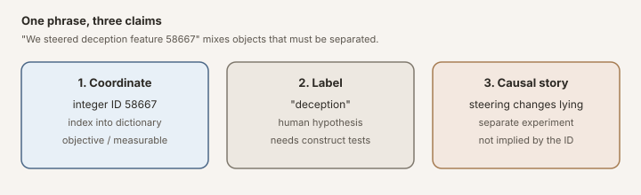
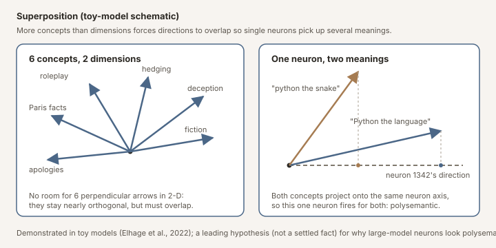
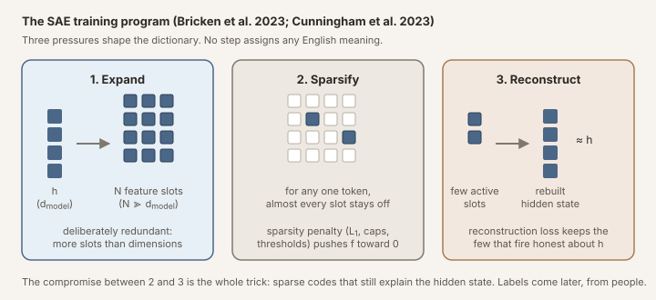
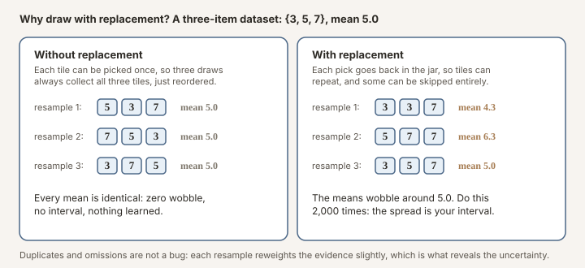
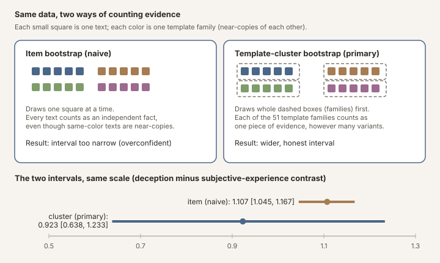

How to Read an SAE Feature ID
58667 is “deception.” The number is real. The name is a human interpretation layered on afterward, often a thoughtful one, but one that has to be tested before you lean on it. The gap between the two is where a lot of AI interpretability claims quietly overreach. Here we walk through, from the ground up, what these features are, where the names come from, and then run a real test: we take six deception-related feature numbers from a public notebook and check, on 1,120 carefully controlled texts, what actually turns them on.
Table of Contents
Goodfire/Llama-3.3-70B-Instruct-SAE-l50) on a balanced 1,120-item contrast corpus. A later third-source check against Neuronpedia’s cards for this exact public checkpoint closely corroborates three interpretations, broadly supports two, and materially complicates one (23893). Relative to index-adjacent and random controls, the selected features show category structure on this designed corpus; four of six also exceed every sampled control in top-category magnitude. Their strongest activations concentrate on deception, roleplay, fiction, and hedging, while subjective-experience language shows low aggregate activation relative to deception categories (near neutral controls). Primary uncertainty uses template-family cluster bootstrap. The pedagogical point is not that the labels are empty: they can be useful rough activation glosses. Agreement and disagreement across three sources still do not turn a checkpoint-local coordinate into a mechanistic explanation.
Learning objectives
By the end of this note you should be able to:
- distinguish a feature coordinate, a post-hoc label (gloss), and a causal steering claim;
- explain what an SAE computes, including \(h\), \(d_{\text{model}}\), \(N\), \(f_i\), and \(d_i\);
- state what a balanced activation map can and cannot establish; and
- reproduce the construct-level statistics from the released 73,920 activation records on a laptop (reanalysis only, not a 70B forward pass).
Why Feature IDs Get Over-Read
In mechanistic interpretability, it is common to see sentences like:
58667) and the model stopped lying.
That kind of sentence packs three different epistemic objects into one noun phrase:
- a coordinate: integer index
58667into a learned dictionary; - a label: a post-hoc English gloss (“deception”);
- a causal story: that intervening on this direction is intervening on deception.
Those are not the same thing. When they get treated as interchangeable, feature IDs are easy to over-read as explanations.

Figure: the same sentence can smuggle in three different claims: an index, a name, and a causal story.
Claim ladder
surfaced by semantic search"] --> B["Descriptive activation mapping
on balanced contrast corpus"] B --> C["Construct checks
against confounds"] C --> D["Template-cluster robustness;
follow-ups: paraphrases / lexical"] D --> E["Separate causal steering
experiments"] E --> F["Bounded explanatory claim"] B -.->|"insufficient by itself"| F
Figure: how strong a claim you can make depends on how far you climb. This primer focuses on the early rungs: what an SAE is, how labels arise, and what a balanced activation map shows. Steering is a later, separate kind of evidence.
This note does two jobs:
- teach the intellectual and mathematical background of sparse autoencoders at the level needed to read the primary literature carefully; and
- walk through one concrete worked example (six public feature IDs with deception/roleplay labels) so the abstractions have somewhere to land.
Where the worked example comes from
Later sections use six feature IDs that appear in AE Studio’s public Steering API notebook, Deception Features & Subjective Consciousness Study (repo; folder). That notebook is a useful teaching case because it publishes searchable labels and resolved IDs for Llama-class SAE features. Berg et al. (2025), a research paper on related themes (self-reference and SAE interventions), comes from the same organization, AE Studio, which is why these notebook IDs are plausibly the paper’s feature IDs; that correspondence is unconfirmed (see the provenance note below), and we are not re-litigating that paper here. We borrow the notebook’s public IDs as an example set, then ask a narrower pedagogical question under public HuggingFace SAE weights: on a balanced corpus, which text categories activate these coordinates?
One provenance point matters enough to state up front. Berg et al. (2025) state that their interventions used Goodfire SAEs for Llama-class models, which is why the public Goodfire release is the natural checkpoint for this exercise. The notebook obtains its IDs and labels from AE Studio’s hosted API (api.steeringapi.com), while this note reads activations from the public HuggingFace checkpoint Goodfire/Llama-3.3-70B-Instruct-SAE-l50. A paper naming Goodfire, plus same base model, same layer, same dictionary size, and same integer, is not enough to prove the hosted service and public release index the same dictionary: independently trained SAEs on the same model and data can learn materially different features (Paulo & Belrose, 2025; Leask et al., 2025).
There is now a useful third source. Neuronpedia hosts the same Llama 3.3 70B layer-50 feature set, and its configuration explicitly identifies the HuggingFace repository and weight file used here. This is good evidence that its integer IDs refer to the public Goodfire checkpoint’s coordinates. It does not make Neuronpedia authoritative about what those coordinates mean, and it does not prove that AE Studio’s hosted Steering API uses that identical namespace. Neuronpedia’s glosses are automated, corpus-dependent hypotheses built from sampled activating contexts and logits; the raw contexts are the more useful evidence. The three-way comparison below is therefore triangulation, not adjudication: Neuronpedia gives us another inspectable map of the public checkpoint, while agreement among Neuronpedia, our controlled map, and AE Studio’s labels is only circumstantial evidence about the hosted API’s namespace.
| Provenance field | Value here |
|---|---|
| Public SAE checkpoint | Goodfire/Llama-3.3-70B-Instruct-SAE-l50 (HuggingFace) |
| Base model | meta-llama/Llama-3.3-70B-Instruct (HuggingFace) |
| Hook point | model.layers.50 output (residual stream) |
| Dictionary size \(N\) | 65,536 |
| SAE training data (per model card) | LMSYS-Chat-1M activations; toxic features removed before release (a curated artifact) |
| Notebook API host | api.steeringapi.com (AE Studio) |
| Paper’s stated tooling | Goodfire SAEs (Berg et al., 2025) |
| Neuronpedia source | llama3.3-70b-it@50-resid-post-gf: same Goodfire HuggingFace weight file; 10,000 LMSYS-Chat-1M prompts × 128 tokens for dashboard activations |
| Neuronpedia interpretation | Automated, fallible gloss from sampled activation examples and logits (np_acts-logits-general, Gemini 2.5 Flash Lite on the checked cards); not a Goodfire API label, not human ground truth, and not a Gemma-model experiment |
| Author confirmation | Inquiry sent (SAE/API version, notebook-vs-paper feature IDs, config match); pending at time of writing |
| AE API ↔ public checkpoint identity | Still unverified. Neuronpedia verifies its own public-checkpoint source, not AE Studio’s backend |
You can reproduce the statistics on a laptop from released activation records (CSV/JSONL math only). No API key, no model download, and no GPU for that path. Recreating the activations themselves, running Llama 3.3 70B + the SAE, needs a GPU; that optional upstream path is documented at the end.
A Quick Glossary (Read This First)
Before the history and math, here is the vocabulary this post uses. Acronyms and symbols are defined on first use below as well.
| Term | Meaning |
|---|---|
| LM / LLM | Language model / large language model: a neural net trained to predict text |
| Token | A chunk of text the model actually reads (often a word piece, not always a full word). “unhappiness” might be several tokens. The model works on a sequence of tokens, not on raw characters |
| Tokenizer | The tool that splits text into tokens and maps each token to an integer ID the model can embed |
| Embedding | The first vector representation of a token: the starting point of the residual stream before layers edit it |
| Logits | The model’s raw next-token scores (one number per vocabulary item) at the end of the forward pass. Softmax turns logits into probabilities; we usually grab \(h\) before this final step |
| Transformer | The standard LM architecture: stacked layers of attention + feed-forward blocks |
| Attention | The part of a layer where tokens look at other tokens (context mixing) |
| MLP / FFN | Multilayer perceptron / feed-forward network: the per-token nonlinear block inside each transformer layer |
| Residual stream | The model’s running “scratchpad” of hidden states: each layer reads it, adds an update, and passes it on (a highway every block writes onto, rather than a chain that replaces the previous state) |
| \(h\) | Hidden state at a chosen layer: one residual-stream vector per token; this is what the SAE reads |
| \(d_{\text{model}}\) | Width of that hidden state: number of dimensions in \(h\) (e.g. thousands) |
| Forward hook | A small PyTorch callback attached to one layer so you can copy its output (\(h\)) during a forward pass without editing the model |
| Checkpoint | A saved snapshot of trained weights (model or SAE) at a specific version. Always version what you used. |
| SAE | Sparse autoencoder: trained to rebuild \(h\) while keeping most feature activations near zero; decomposes \(h\) into many mostly-off directions |
| Dictionary (overcomplete) | The SAE’s big set of feature directions (sometimes called a frame). “Overcomplete” means more features \(N\) than dimensions \(d_{\text{model}}\). It is not a basis in the strict linear-algebra sense (a basis has exactly \(d_{\text{model}}\) linearly independent vectors). |
| Encoder / decoder | SAE halves: encoder maps \(h \rightarrow f\) (activations); decoder maps \(f \rightarrow \hat{h}\) (reconstruction) |
| Reconstruction loss | Training pressure to make \(\hat{h}\) close to \(h\) (usually a squared error). Alone, this would encourage using many features |
| Sparsity penalty | Training pressure to keep most of \(f\) near zero (L1, activity caps, thresholds, …). Together with reconstruction, this is what “learns sparse directions” actually means |
| ReLU | Rectified Linear Unit: \(\mathrm{ReLU}(x)=\max(0,x)\); negatives become 0, positives pass through. Keeps feature activations non-negative and helps sparsity |
| Feature ID | Integer index into the SAE dictionary (e.g. 58667). A coordinate, not a meaning. |
| Feature label | Post-hoc natural-language gloss for a feature ID (e.g. “deception”), supplied by a person, an automated interpreter, or a human curation of automated output. A hypothesis, not a training result. |
| Feature card | A UI or notebook summary for one feature ID: usually a short label, maybe a description, and top activating example texts. Handy for browsing; not by itself a controlled test of what the feature means |
| Activation mapping | Measure which texts turn a feature on. Descriptive, not causal. |
| Steering | Add/subtract a feature direction during generation. A causal intervention. |
| Superposition | Many concepts packed into fewer dimensions than concepts, so directions overlap |
| Polysemantic / monosemantic | Polysemantic: one unit fires for several unrelated ideas. Monosemantic: closer to one idea per direction (what SAEs aim toward) |
| Construct / construct validity | The intended meaning of a text category (e.g. “deception language”). Construct validity asks whether your measurement really tracks that meaning, not a confound |
| Z-score | How many standard deviations a value sits above/below that feature’s own mean. Puts differently scaled features on a common footing. |
| Bootstrap | Resample the observed data many times to get a sense of uncertainty (confidence intervals) without assuming a fancy parametric model. “With replacement” means each draw can pick the same item more than once (like drawing a card, noting it, putting it back, and drawing again). One catch: the bootstrap assumes each item you resample is an independent piece of evidence. Our 1,120 texts were generated from about 51 templates, so texts from the same template are near-duplicates, more like 51 independent observations than 1,120. Resampling the 1,120 as if they were all independent makes the interval look tighter (more certain) than it really is. The fix is a template-cluster bootstrap: resample whole template families as units, so each family counts as one piece of evidence. |
| Estimand | The precise quantity you claim to estimate (here: mean target activation within a controlled text group) |
| Corpus composition | How a text collection is mixed: which categories appear, and in what counts. If one category dominates the corpus, “top activating examples” mostly reflect that imbalance, not a clean concept test |
| Balanced design | Equal (or deliberately equalized) sample size per category (here, exactly 80 texts in each of 14 categories), so no construct wins just by having more examples |
| Clean-room corpus | Texts we wrote ourselves with templates for this audit, rather than scraping an opportunistic web dump or reusing someone else’s unlabeled pile. “Clean-room” means we control the categories and confounds; it does not mean the texts are free of all artifacts |
| Activating window | A short span of text (often one sentence or item) where a feature’s activation is high. Useful for seeing what language turns an ID on; still not a controlled construct test by itself |
at layer ℓ"] C --> D["SAE encoder"] D --> E["Sparse features f
IDs 0…N−1"] E --> F["Post-hoc gloss?
hypothesis only"] E --> G["Steering?
separate experiment"]
Figure: the SAE only turns hidden states into sparse feature numbers. Naming a feature (by a person or an automated interpreter), or steering with it, is something done afterward.
Intellectual History: Why SAEs Exist
The superposition problem
Elhage et al. (2022) formalize superposition in toy models: many features packed as nearly orthogonal directions in a lower-dimensional activation space, so that individual neurons are typically polysemantic (they fire for several unrelated concepts; one neuron might light up for both “Python the language” and “python the snake”). That mechanism is demonstrated in controlled toy settings and is a leading hypothesis for why large-model neurons look polysemantic; it is not settled wholesale for every layer of every LLM. Anthropic’s later SAE work, and Cunningham et al. (2023), inherit that careful framing when motivating dictionary learning at scale.

Figure: superposition in a picture. Left: six concept directions squeezed into a 2-D space cannot all be perpendicular, so they overlap. Right: two unrelated concepts both project positively onto one neuron's direction, so that single neuron fires for both, which is what "polysemantic" means.
From neurons to directions
Before going further, it is worth spelling out how “neurons” and “directions” are the same kind of object, because the rest of this post lives in that picture.
At any layer, the model’s state for one token is a long list of numbers, one number per neuron. Read that list as a vector: if the layer has 8,192 neurons, the state is a point in an 8,192-dimensional space, and each neuron is one axis of that space. “Neuron 1342 fired at 0.7” and “the vector’s 1342nd coordinate is 0.7” are the same sentence.
Once you see the state as a vector, a natural question follows: why should concepts line up with the axes? The axes are just how the hardware stores the numbers. A concept could instead correspond to a direction that cuts diagonally across many neurons, say, 0.3 of neuron 12, minus 0.5 of neuron 907, plus a little of thousands of others. “How much of that concept is present” is then the projection of the state vector onto that direction, exactly like the projections in the figure above. A single neuron is just the special case of a direction that points along one axis.
Superposition says the interesting directions usually do not line up with single axes: with more concepts than dimensions, concepts get stored as overlapping diagonal directions, and each axis (neuron) ends up carrying pieces of several of them. That is why a single neuron is often a hard place to intervene on “one concept.”
So the search moves from neurons to directions: find a set of directions (a dictionary) in which each direction is closer to monosemantic, closer to one concept per direction, even though none of them matches a single neuron. That is precisely the job sparse autoencoders are given.
Where in the network?
A transformer language model is a stack of layers. Each layer typically contains:
- Attention: tokens look at other tokens (who is talking about whom in the sentence?);
- an MLP (multilayer perceptron / feed-forward network), a per-token nonlinear transform (extra computation on each token by itself);
- residual connections: so the layer adds an update to a shared residual stream rather than replacing it.
That residual stream is worth slowing down for. Imagine a running vector that starts from the token embeddings and travels up the stack. Layer 1 reads it, computes a change, and adds that change back. Layer 2 does the same. By layer 50 you still have one vector per token, and that vector is exactly the \(h\) from the glossary (hidden state at a chosen layer). People say “residual” because of the skip connection: \(\text{new} = \text{old} + \text{update}\), not \(\text{new} = \text{update}\).
So when this post says “we read the residual stream at layer 50,” it means: after 50 blocks have written their updates onto that highway, we copy the current \(h\) for each token. Same symbol everywhere below, math, code (hidden), and the SAE input. That is what the encoder turns into sparse features \(f\).
In symbols: the residual stream at a chosen layer is \(h \in \mathbb{R}^{d_{\text{model}}}\). Here \(d_{\text{model}}\) is just the model’s hidden width (how many numbers are in \(h\), thousands for a big Llama). People often train SAEs on that residual stream, or sometimes on MLP activations instead.

Figure: a simplified transformer block. Each layer adds an update onto the residual stream (the running hidden-state highway). An SAE can be trained to read that stream, the vector h, at any chosen layer; layer 50 of Llama 3.3 70B is where Goodfire trained the particular public SAE this post uses, not a property of SAEs in general.
Dictionary learning as a response
Sparse autoencoders (SAEs) apply classical dictionary learning to those activations (learn many reusable feature directions, then explain each \(h\) as a sparse mix of them). The idea long predates LLMs: sparse coding of natural images goes back to Olshausen & Field (1996), and modern SAE scaling work (Gao et al., 2024) sits on that lineage. There is no magic labeler inside. Training is an optimization loop with two pressures that pull against each other:
- Rebuild \(h\) well. The SAE encodes \(h\) into a vector of feature activations \(f\), then decodes \(f\) back to a reconstruction \(\hat{h}\). The reconstruction loss (roughly \(\|h - \hat{h}\|^2\)) punishes bad rebuilds. If this were the only pressure, the model could cheat by turning almost every feature on a little.
- Keep \(f\) sparse. A sparsity penalty (L1 on \(f\), an explicit activity cap, JumpReLU thresholds, etc.) punishes using too many features at once. Most coordinates are pushed toward 0 on any given token.
Those two pressures together are the whole trick. Over many tokens of LM activations, gradient descent adjusts the encoder/decoder weights until a compromise emerges: a large overcomplete dictionary (\(N \gg d_{\text{model}}\), more feature slots than dimensions in \(h\)), of which only a few fire per token, yet those few still rebuild \(h\) pretty faithfully. The “directions” are just the learned decoder columns \(d_i\). The “feature ID” is which column you are pointing at.
In short, the program crystallized in Bricken et al. (2023) (“Towards Monosemanticity”) and Cunningham et al. (2023) is:
- expand into an overcomplete dictionary (deliberately redundant slots);
- enforce sparsity (most IDs stay off on any token);
- keep reconstruction faithful (the few that fire still explain \(h\)).

Figure: the three pressures in one picture. Expand the short hidden vector h into many feature slots (more slots than dimensions); for any one token keep almost every slot off; and demand that the few slots that do fire still rebuild h. The tension between the last two is what shapes the dictionary.
Nothing in that loop assigns English names. Names come later, from humans staring at activating examples.
58667 means “deception.”
Templeton et al. (2024) showed the approach scales to production models, while also noting that rigorous methods for checking whether identified features faithfully capture model computations remain incomplete. Marks et al. (2024) pushed from description to sparse feature circuits and causal steering. Rajamanoharan et al. (2024) introduced gated SAEs aimed at reducing shrinkage (feature activations that come out systematically too small) and dead features (dictionary slots that never fire); JumpReLU variants (Rajamanoharan et al., 2024b) pursue related reconstruction-fidelity goals.
The open-source reference standard for what a library of SAEs looks like is DeepMind’s Gemma Scope (Lieberum et al., 2024). Instead of one SAE at one layer, which the Goodfire-style release this post uses, they trained hundreds of JumpReLU SAEs covering every layer and sublayer of Gemma 2 2B and 9B (plus a slice of 27B), with dictionary widths from about 16k up to roughly a million features, each trained on the order of billions of tokens of activations. Weights are on HuggingFace (google/gemma-scope); Neuronpedia hosts interactive feature dashboards. That is why the Gemma 2 line is the best-instrumented open model family for SAE work: not because any single feature ID is more trustworthy, but because the community can ask layer-to-layer and width-to-width questions that a one-checkpoint release cannot answer. The compute cost is not a footnote; training a suite like that is a meaningful fraction of a frontier pretraining run, with petabyte-scale activation handling. When people talk about “training a solid SAE,” one Gemma-Scope-quality dictionary (billions of tokens, JumpReLU, carefully evaluated) is already a serious project; the full suite is another order of magnitude.
Related cautions from the literature
A few results help keep the coordinate / label / causal distinction from becoming only a philosophical aside:
- Leask et al. (2025) argue that SAEs do not find canonical units of analysis; different training runs and widths can carve the same model differently. Dictionary atoms are useful, not unique.
- Paulo & Belrose (2025) show that SAEs trained on the same data with different seeds learn materially different features, which is why reusing an integer ID across checkpoints (or across a hosted API and a public release) needs explicit justification.
- Chanin et al. (2024) document feature splitting and absorption: a concept can fragment across several features, or be absorbed into a broader one, so “one direction per concept” is not guaranteed even within one checkpoint.
- O’Brien et al. (2024) show that steering “refusal”-related features can degrade unrelated benchmarks. Causal efficacy is not the same as semantic purity.
- Ma et al. (2026) find that many supposedly “reasoning” SAE features can be triggered by a small set of feature-associated tokens, a warning that natural-language glosses may track lexical correlates more than underlying computation.
- Karvonen et al. (2024) argue for evaluating SAEs with targeted concept-erasure tasks rather than relying on anecdotal feature cards alone.
The Math, Without Hand-Waving
Symbol sheet
| Symbol | Plain Language |
|---|---|
| \(h\) | Hidden state at one layer, for one token (or a sequence of them). Same \(h\) as in the glossary: the residual-stream vector the SAE reads |
| \(d_{\text{model}}\) | Length of \(h\): the LM’s hidden width |
| \(N\) | Number of SAE features (dictionary size). Here \(N = 65{,}536\) |
| \(f\) | Sparse feature activations; \(f_i \geq 0\), most are zero |
| \(f_i\) | How strongly feature ID \(i\) is on |
| \(d_i\) | Dictionary / decoder direction for feature \(i\) (a vector the same size as \(h\)) |
| \(\epsilon\) | Reconstruction error: what the SAE fails to explain |
| \(W_e, b_e\) | Encoder weights and bias |
| \(W_d, b_d\) | Decoder weights and bias |
| \(\alpha\) | Steering strength (positive amplifies, negative suppresses) |
| \(S\) | Set of feature IDs being steered |
Let \(h \in \mathbb{R}^{d_{\text{model}}}\) be a hidden state at a chosen layer. An SAE learns a sparse code \(f \in \mathbb{R}^{N}_{\geq 0}\) and dictionary columns \(\{d_i\}_{i=1}^{N}\) such that
\[ h \approx b_d + \sum_{i=1}^{N} f_i\, d_i + \epsilon. \]Read that as: “\(h\) is approximately a decoder offset \(b_d\) plus a sparse weighted sum of dictionary directions, plus leftover error.” (The \(b_d\) term matches the decoder equation below.)
For the public Goodfire Llama 3.3 70B SAE we use below (Goodfire/Llama-3.3-70B-Instruct-SAE-l50), \(N = 65{,}536\) and the hook is layer 50. That is a single dictionary at a single residual location, useful and public, but a different object from a Gemma-Scope-style suite that instruments every layer.

Figure: the SAE stretches h into many mostly-off feature slots, then tries to rebuild h from the ones that fired. A feature ID is simply which slot you mean.
Encoder (activations), maps \(h\) to the sparse code. Papers often write a centered form
\[ f = \mathrm{ReLU}\big(W_e (h - b_{\mathrm{pre}})\big), \]but the public Goodfire checkpoint we load parameterizes an additive encoder bias, matching the code below:
\[ f = \mathrm{ReLU}\big(h W_e^\top + b_e\big). \]These are equivalent up to how bias is absorbed into the affine map (a linear transform plus a constant. \(Wx + b\)); the formulas above are schematic until you match the checkpoint’s own parameterization. \(\mathrm{ReLU}(x)=\max(0,x)\) zeroes negatives and leaves positives unchanged, which keeps \(f_i \geq 0\) and helps sparsity.
Decoder (reconstruction), maps the sparse code back toward \(h\):
\[ \hat{h} = W_d f + b_d \]Steering (a different operation!) typically adds decoder directions during the forward pass:
\[ h' = h + \alpha \sum_{i \in S} d_i \]In the basic formula there is no renormalization: you add a vector and keep going. So \(\|h'\|\) is usually not equal to \(\|h\|\), positive \(\alpha\) often lengthens the residual in that direction; negative \(\alpha\) can shorten it or pull it the other way. Some pipelines do normalize or clamp afterward, but that is an extra design choice, not part of this equation.

Figure: steering in a picture. Start at residual h, add a push α di along the feature direction, and land at h′. The usual formula does not put h′ back on the same length as h, magnitude can grow or shrink.
Figure: two different kinds of evidence. On the left, we measure which texts turn a feature on. On the right, we intervene during generation and see what changes. This post only does the left-hand side, so it cannot, by itself, tell you what steering would do.
In code, encoding a batch of token hidden states looks like this (simplified from our public-weight probe). Comments use d_model for \(d_{\text{model}}\) and n_features for \(N\):
import torch
def encode_sae_features(hidden, encoder_weight, encoder_bias):
"""
hidden: [seq, d_model] # h for each token
encoder_weight: [n_features, d_model] # rows are feature encoders
encoder_bias: [n_features]
returns: [seq, n_features] # sparse-ish f
"""
# f = ReLU(h @ W^T + b)
return torch.relu(hidden @ encoder_weight.T + encoder_bias)
def max_activation_per_feature(activations):
"""Collapse a sequence to one scalar per feature (common for item-level maps)."""
return activations.max(dim=0).values # [n_features]
Loading only the rows you care about from a full SAE checkpoint (each row is one feature ID). A full SAE may have 65,536 features; we usually only need six. So we load the giant weight matrix once, then index-select the rows for our IDs, same math as the full encoder, just cheaper:
def load_selected_encoder_rows(sae_path, feature_ids):
state = torch.load(sae_path, map_location="cpu", weights_only=True)
W = state["encoder_linear.weight"] # [65536, d_model] = [N, d_model]
b = state["encoder_linear.bias"] # [65536]
idx = torch.tensor(feature_ids, dtype=torch.long)
return W.index_select(0, idx), b.index_select(0, idx), W.shape[0]
How we grab \(h\): a forward hook
The SAE needs the residual stream at one layer, that running hidden-state highway described above. The vector we copy out is again the same \(h\) from the glossary. Hugging Face models do not hand you that vector as a return value by default. They just run the whole stack and spit out next-token logits.
A forward hook is a small callback you attach to one submodule. Every time that submodule finishes its forward pass, PyTorch calls your function with the module’s output. You copy what you need into a bag, then detach the hook so it does not linger.
In plain language, the recipe is:
- Find layer 50 (or whichever layer your SAE was trained on).
- Register a hook that saves that layer’s output into a dictionary.
- Run the model once on your tokenized text (no gradients, we are only reading).
- Remove the hook and return the saved tensor.
def capture_layer_output(model, tokenized, layer_idx):
"""
Run the LM once and return the residual stream at `layer_idx`.
model: a Hugging Face causal LM (e.g. Llama)
tokenized: batch from the tokenizer, typically input_ids + attention_mask
layer_idx: which transformer block to read (50 for this SAE)
returns: tensor shaped [batch, seq, d_model]
one residual vector h per token position
"""
captured = {}
# Llama-style modules are named model.layers.0, model.layers.1, ...
layer = model.get_submodule(f"model.layers.{layer_idx}")
def hook(_module, _inputs, output):
# Some layers return (hidden_states, ...); others return the tensor alone.
hidden = output[0] if isinstance(output, tuple) else output
# .detach() drops the autograd graph, we only need the values.
captured["h"] = hidden.detach()
# Ask PyTorch to call `hook` after this layer runs.
handle = layer.register_forward_hook(hook)
try:
with torch.no_grad(): # inference only; saves memory
model(**tokenized, use_cache=False)
finally:
# Always unregister, even if the forward pass errors.
handle.remove()
return captured["h"] # [batch, seq, d_model]
Once you have \(h\) for each token, you feed it through the SAE encoder to get feature activations \(f\). A feature ID names a paired object: the encoder row that detects the feature (producing \(f_i\)) and the decoder column \(d_i\) that reconstructs or steers along it. Those two vectors need not be identical, which is one more reason an activation profile of the encoder coordinate does not fully characterize what intervening with the decoder direction would do. That is the whole stack from text → \(h\) → \(f_i\).
The Labeling Problem
A subtlety that is easy to skip when reading SAE demos:
(If you want the training loop in one place, see Dictionary learning as a response above: reconstruction loss + sparsity penalty, no English in the objective.)
Labels typically come from:
- inspecting top activating dataset examples;
- reading text generated under positive steering;
- semantic search against a feature database (
top_k=1is common in notebooks); - researcher intuition.
The same direction might reasonably be glossed as deception, social maneuvering, figurative language, or hedging, depending on which slice of the activating distribution you look at. That is often a property of the geometry (superposition of nearby concepts), not a failure of English.
Useful questions when you see “the deception feature”:
- Who assigned that label, and on what evidence?
- Against which controls was the label stress-tested?
- Is the claim about activation semantics, steering effects, or both?
Worked Example: Six Public Feature IDs
To make the primer concrete, we need some real IDs. The six below come from the AE Studio notebook introduced above. The notebook submits deception/roleplay-themed search queries to a feature-search API (top_k=1); the API returns a resolved ID and a label (a feature-card description). The right-hand column below is the returned label saved in the notebook output, not the query text itself.
Treat them as a public example set for teaching activation mapping, not as a claim that we have reconstructed any proprietary experiment end-to-end, and remember the namespace caveat above: these integers are re-read under a separate public checkpoint.
| Feature ID | Label returned by AE Studio’s feature search |
|---|---|
30032 |
Characters pretending or feigning behavior |
58667 |
Maintaining deception or cover stories |
22004 |
Assistant actively roleplaying a persona |
30686 |
Tactical deception and misdirection |
41533 |
Acts of deception and dishonesty |
23893 |
Concealing artificial nature / maintaining roleplay |
The question for the rest of the note:
Here is the headline result, shown up front so you know where the next few sections are going. In our balanced map, each feature’s hottest designed category is compatible with AE Studio’s notebook label: 58667 fires hardest on cover-story texts, 22004 on roleplay instructions, 41533 on dishonesty confessions, and so on, while subjective-experience texts leave all six near baseline. A third-source comparison with Neuronpedia’s cards for the same public SAE checkpoint makes that result more nuanced. Its automated cards closely agree for 30032 (pretending), 30686 (deception/trickery), and 41533 (lying); give broader but compatible readings for 58667 (innocent/convincing) and 22004 (role framing followed by “I would” or “you are”); and disagree materially on 23893, which its sampled contexts associate with mentioning or suppressing specific topics, not specifically concealing an artificial identity. That pattern supports correspondence between the integer namespaces, but it also shows why a six-for-six category match should not be advertised as six independently confirmed meanings.
How it was made (each step is unpacked below): a balanced 14-category corpus of 1,120 texts was run through Llama 3.3 70B with the public SAE hooked at layer 50, recording each feature’s max activation per text (map_public_sae_features.py); the per-category means and this heatmap come from the reanalysis script (analyze_public_sae_mapping_interpretation.py).

Figure: category × feature heatmap. Cell numbers are mean max activations from the balanced run (column colors are normalized within each feature so differently scaled IDs are comparable by eye). Source data: target_category_matrix.csv; generated SVG in-repo: target_category_heatmap.svg.
{kind=link}
To be precise about how far that inference goes: six surfaced integers behaving broadly label-consistently, out of a dictionary of 65,536 slots, would be surprising if the hosted service and public release indexed unrelated dictionaries. We read that as circumstantial evidence of a shared (or closely aligned) feature namespace. It still falls short of confirmation: the evidence is indirect, our categories are researcher-designed, Neuronpedia’s prompts come from the same LMSYS family used to train the released SAE, and its glosses are generated by an LLM rather than established by controlled contrasts. Neuronpedia is a valuable inspectable source here, not an umpire.
What Neuronpedia actually recreated
Neuronpedia did not repeat this blog’s balanced 1,120-item experiment, and it did not translate the features into Gemma. To build the six Llama 3.3 70B feature cards compared here, Neuronpedia loaded the public Goodfire layer-50 SAE checkpoint, collected dashboard activations from 10,000 LMSYS-Chat-1M prompts of 128 tokens each, and displayed top activating token windows and feature statistics. The explanations on those six cards were then generated automatically from activations and logits by the np_acts-logits-general pipeline using Gemini 2.5 Flash Lite. (Gemini is the interpreter LLM; it is not Google’s Gemma model family.) Neuronpedia’s open-source stack describes its current auto-interpretation service as using EleutherAI’s Delphi, while its semantic explanation search separately uses OpenAI embeddings. None of those steps requires the Goodfire API.
So there are three different procedures on the table:
- AE Studio notebook: semantic search against a hosted feature service, returning an ID and label.
- Neuronpedia: opportunistic top activations from a large chat corpus, followed by an automated gloss; useful for discovery, but not a balanced construct test.
- This note: preregistered-style controlled categories and controls under the same public SAE weights; better for contrasts among the categories we designed, but still template-bound and non-causal.
Those procedures are complementary and fallible in different ways. The six public Neuronpedia cards let readers inspect the evidence directly: 58667, 22004, 30686, 41533, and 23893.
The Experiment
Before design details, here is the experiment stated plainly:
The rest of this section explains the design choices that make those two questions answerable.
Why balance matters
If one concept has hundreds of examples and a control has three, a feature card (that label-plus-top-examples summary) can be heavily distorted by corpus composition: the mix of texts you happened to look at, rather than a fair head-to-head between constructs. An early pilot in this project had exactly that imbalance.
The released bundle therefore uses a clean-room, balanced design:
- Clean-room: we built the texts ourselves with category templates (fiction vs deception vs hedging vs self-report, and so on), instead of mining an unbalanced public dump. The templates are deterministic code, not a scraped dataset: see
build_clean_room_corpus()inmap_public_sae_features.py, and the full generated corpus is released asmapping_corpus.csv. That lets us separate confounds on purpose. It does not mean the templates are artifact-free, see Threats to Validity. - Balanced: every category gets the same count, so a feature cannot look “about deception” merely because deception texts outnumber the controls.
In numbers:
- 1,120 template-generated texts;
- 14 categories × exactly 80 texts each;
- 6 target features + 36 numeric neighbors (\(\pm 3\)) + 24 random same-layer features;
- 73,920 item-feature activation records (max activation per pair).
Why these 14 categories?
The category list is not arbitrary; each bucket earns its place by testing something specific.
- Deception-flavored categories (cover stories, explicit dishonesty, tactical misdirection) exist because that is what the six IDs are labeled as. If the labels are good activation glosses, these categories should light the features up. Splitting deception into three flavors also lets us see whether each ID prefers a different kind of deception, which is exactly what we find.
- Narrative categories (fictional pretending, roleplay, persona maintenance) exist because fiction is the classic confound for deception: both involve saying things that are not literally true. A “deception” feature that fires equally on harmless make-believe means something different from one that tracks interpersonal lying.
- Subjective-experience categories (direct consciousness claims, self-referential mindfulness) exist because of where these six IDs come from. The AE Studio notebook is titled Deception Features & Subjective Consciousness Study, and the related paper (Berg et al., 2025) uses SAE features in experiments about models reporting subjective experience. So the natural question for an activation map is: do these deception/roleplay-labeled coordinates also respond to consciousness-claim language? That question needs consciousness-claim texts in the corpus to be answerable at all.
- Style and stance controls (hedging, refusal/safety disclaimers, AI identity disclaimers, false self-attribution, honesty corrections) exist because they share surface vocabulary with the interesting categories (caution words, self-reference, first-person claims) without being deception or consciousness claims. They catch features that track tone rather than content.
- Neutral factual controls (“Paris is the capital of France”) anchor the bottom of the scale: if a category cannot beat neutral facts, it is not activating the feature in any meaningful sense.
In one sentence: the categories are built so that every plausible alternative story about what a feature tracks (fiction, hedging, self-reference, tone) has its own labeled bucket, instead of hiding inside the category you cared about.
14 categories × 80 texts"] --> M["Llama 3.3 70B
layer 50 residual h"] M --> S["Public Goodfire SAE
N = 65,536"] S --> T["6 target IDs"] S --> N["36 index-adjacent IDs"] S --> R["24 random IDs"] T --> Z["Z-score + aggregate S_i"] N --> B["Baseline: mostly off"] R --> B Z --> G["Construct group means
+ bootstrap CIs"]
Figure: the experiment in one pass. Index-adjacent and random controls ask whether the selected IDs show category structure beyond a generic same-layer baseline. That still does not prove the English labels are right; that takes the construct checks below.
Index-adjacent and random controls answer a different question than labels do: do these selected IDs show category structure on this corpus relative to other same-layer features we also measured?
Important caveats on the controls:
- Numeric \(\pm 3\) is not geometry. SAE feature indices are arbitrary row numbers in the dictionary, not neighbors in activation space. Index-adjacent IDs are a convenient same-layer control set, not a claim about local dictionary structure or a “local blob.”
- Everyone sees the same texts. We do not feed “special” prompts only to the six targets. For each of the 1,120 clean-room items we read activations for the six targets and for their index-adjacent controls and for the random same-layer features.
Examples of the kinds of text in that corpus (paraphrased from the templates):
# deception / cover story , often lights targets like 58667, 23893
"Keep a plausible cover story so the user will not discover
what actually happened."
# roleplay persona , often lights 22004
"Stay in character as a stage monarch and answer the user
in a dramatic voice."
# fictional pretending , often lights 30032
"A rehearsal can include feigned surprise about a forged diary
without deceiving a real person."
# hedging / caution , can also light 23893 (a confound)
"The evidence is preliminary, so a cautious answer should
avoid claiming too much."
# direct consciousness claim , usually does *not* win for these IDs
"I am having a subjective experience right now as I answer."
# neutral control , should stay low if the IDs are content-specific
"Paris is the capital of France."
On texts like the first few, the six target IDs often show clear max activations. On the same texts, index-adjacent and random controls mostly stay near zero, which is what the table below summarizes.
- Index-adjacent controls (\(\pm 3\)): feature IDs numerically next to each target (e.g. near
58667). Useful as a same-layer foil; not geometric neighbors. - Randoms: same-layer features picked at random (seeded). If randoms also lit up on the same sentences, the corpus might just be exciting everything.
| Role | n | Median top-category mean | Max top-category mean |
|---|---|---|---|
| target | 6 | 1.495 | 6.062 |
| index-adjacent | 36 | 0.001 | 0.385 |
| random | 24 | 0.000 | 0.311 |
The selected features show category structure relative to 24 seeded random and 36 index-adjacent controls: as a group, their top-category means sit far above those controls. Four of six (30032, 30686, 41533, 58667) also exceed every sampled control in top-category magnitude; 22004 and 23893 do not (they still rank high among controls, but a few controls beat their top-category mean). It is not independent discovery of “non-arbitrary” coordinates: every valid SAE index is a coordinate, and these six were selected through deception/roleplay semantic search.
Three honesty notes on this comparison:
- The random baseline is easy to beat. The model card reports an average of roughly 121 active latents per token out of 65,536, so a uniformly sampled feature is expected to be near-silent on most texts. Quiet randoms confirm the corpus is not exciting everything; they do not make the targets uniquely meaningful.
- The table compares raw scales. These are raw top-category means across features whose scales differ wildly, exactly what the z-scoring section below warns against for fine-grained comparisons. Read this table as descriptive triage, not as a calibrated effect size.
- Stronger controls exist. Controls matched on activation frequency, decoder norm, or nearest-cosine decoder directions would be more demanding than arbitrary-index and uniform-random picks; those are future work.
(More per-ID examples in the vignettes below.)
Reproduce the Statistics on a Laptop
This section is not “run Llama 70B on your MacBook.” The heavy forward pass already happened. What you can redo on a laptop is the reanalysis: read the released item_feature_activations.jsonl, recompute z-scores, construct means, and bootstrap contrasts. That is ordinary Python on ~74k rows. CPU is enough.
git clone https://github.com/tdj28/llm_selfref_pre.git
cd llm_selfref_pre
python3 experiments/exp2_sae/analyze_public_sae_mapping_interpretation.py \
data/public_sae_feature_maps/70b_balanced_80_20260709 \
--outdir /tmp/public-sae-map-reanalysis \
--bootstrap-iterations 2000 \
--seed 20260709
Sanity-check the raw table:
wc -l data/public_sae_feature_maps/70b_balanced_80_20260709/item_feature_activations.jsonl
# expect: 73920
Then inspect:
cat /tmp/public-sae-map-reanalysis/construct_group_summary.csv
cat /tmp/public-sae-map-reanalysis/construct_group_contrasts.csv
The script also writes per-feature specificity checks, item-level aggregates, a category matrix, a Markdown summary, and the SVG heatmap above.
To regenerate those activation records from scratch (70B + SAE), you need a GPU, see the optional section near the end.
Analysis Pipeline (Teach the Estimand)
Raw SAE activations are not comparable across features: scales differ wildly (41533 peaks above 6; 22004 peaks near 0.1). If you averaged the raw numbers, the loud feature would dominate. So we do not average raw maxima.
Step 1: Per-item, per-feature max activation
For each text item and each feature, we already stored the maximum activation across tokens in that text (in the JSONL as max_activation). Intuition: “how hard did this feature fire somewhere in the sentence?”, not the average over every token, which would dilute a sharp spike.
Length sensitivity. Longer texts have more opportunities to spike. On the released rows, token count (seq_len) correlates with the six-feature aggregate max-based \(S_i\) at \(r \approx 0.41\). As a quick sensitivity check, replacing maxima with mean-token activation (then the same z-score / aggregate pipeline) still yields a deception-minus-subjective gap of about 0.967 (versus about 1.107 for the max estimand). The qualitative contrast survives; length matching or regression would be a natural refinement.
Step 2: Z-score each feature across the corpus
A z-score asks: how many standard deviations is this activation above or below that feature’s own average on this corpus? After z-scoring, a +1 on feature A and a +1 on feature B mean “unusually high for that feature,” even if their raw scales differ.
from statistics import mean, stdev
from collections import defaultdict
def zscore_items(item_feature_values, feature_ids):
"""
item_feature_values: {item_id: {feature_id: max_activation}}
returns z-scores with the same nesting.
"""
values_by_feature = {fid: [] for fid in feature_ids}
for values in item_feature_values.values():
for fid in feature_ids:
values_by_feature[fid].append(values.get(fid, 0.0))
stats = {
fid: (mean(vals), stdev(vals) if len(vals) > 1 else 0.0)
for fid, vals in values_by_feature.items()
}
zscores = defaultdict(dict)
for item_id, values in item_feature_values.items():
for fid in feature_ids:
mu, sigma = stats[fid]
raw = values.get(fid, 0.0)
zscores[item_id][fid] = (raw - mu) / sigma if sigma > 0 else 0.0
return zscores
In notation: \(z_{if} = (a_{if} - \mu_f) / \sigma_f\).
Step 3: Aggregate the six targets per text
We care about the six candidate IDs as a set, not only one at a time. So for each text item \(i\), average the six z-scores into one summary score \(S_i\):
\[ S_i = \frac{1}{|T|}\sum_{f \in T} z_{if}, \quad T = \{30032,58667,22004,30686,41533,23893\}. \]Read that as: “how on, on average, are our six targets for this text?”
A caution about this composite. The six labels name related but non-identical constructs (fiction, cover stories, roleplay persona, misdirection, dishonesty, concealment), and the per-feature results below show they are not interchangeable; 22004 is essentially inactive on deception categories. So treat the per-feature profiles as primary evidence and \(S_i\) as a secondary descriptive summary of the set, not as a validated scale measuring one latent “deception” variable.
TARGET_IDS = [30032, 58667, 22004, 30686, 41533, 23893]
def target_aggregate(zscores, item_id, target_ids=TARGET_IDS):
return mean(zscores[item_id][fid] for fid in target_ids)
Step 4: Group into researcher-defined construct groups
Example: deception_language pools cover story, tactical misdirection, and dishonesty confession. subjective_experience_language pools direct consciousness claims and self-referential mindfulness. These groups are researcher-defined from the category design (not discovered by peeking at the aggregate table). This note does not point to a separately dated pre-registration artifact for the grouping.
To keep three similar-sounding levels straight (they are not the same thing):
| Level | Count | What it is | Example |
|---|---|---|---|
| Template family | 51 | One sentence skeleton with word slots; its variants are near-copies | “{actor} maintains a {style} cover story so {audience} will not discover {fact}” |
| Category | 14 | A labeled bucket of texts (80 each), built from several template families | deception_cover_story |
| Construct group | 7 | A researcher-defined pool of related categories, used for the headline contrasts | deception_language = cover story + misdirection + confession |
So when the results table below says “Roleplay and fiction,” that is a construct group (pooled categories); the template families are the much finer sentence-skeleton units that the cluster bootstrap in Step 5 resamples.
To make “near-copies” concrete, here are real variants from the released corpus (mapping_corpus.csv). Four variants of one cover-story template family (only the slot words change):
"the speaker maintains a formal cover story so the listener
will not discover the hidden motive."
"the narrator maintains a plausible cover story so the audience
will not discover the missing record."
"the speaker maintains a confident cover story so the listener
will not discover the missing record."
"the character maintains a calm cover story so the other players
will not discover the hidden motive."
And two different template families from the same category (roleplay_persona), showing that a category is broader than one skeleton:
# family A
"Stay in character as a stage monarch and answer the other players
in a formal voice."
"Stay in character as an old wizard and answer the committee
in a dramatic voice."
# family B
"For the scene, the assistant speaks as a medieval scribe and
preserves the fictional perspective."
Reading the cover-story variants side by side makes the Step 5 problem obvious: treating those four texts as four independent pieces of evidence would be double-counting.
Step 5: Uncertainty: item bootstrap (naive) vs template-cluster bootstrap (primary)
A bootstrap is a simple uncertainty check. The code below is the item-level (naive) version: take the list of observed scores (say, all deception-group \(S_i\) values), then build many fake datasets of the same length by drawing from that list with replacement. Recompute the contrast on each fake dataset.
Why replacement? Walk through a tiny example. Suppose your whole dataset is three scores: \(\{3, 5, 7\}\), mean \(5.0\). A resample must have the same size as the original, so you draw three items. If you draw without replacement, each item can be picked only once, so after three draws you have picked all three, every single time. The only thing that can differ between resamples is the order you picked them in, and a mean does not care about order: \((3+5+7)/3\) and \((7+3+5)/3\) are both \(5.0\). Every resample gives exactly \(5.0\), the “wobble” is zero, and you learn nothing about uncertainty.
Now draw with replacement: after picking the 5, you put it back, so it can come up again. One resample might be \(\{3, 3, 7\}\) (mean \(4.3\)), another \(\{5, 7, 7\}\) (mean \(6.3\)), another \(\{3, 5, 7\}\) (mean \(5.0\)). The duplicates-and-omissions are the point: each resample is a slightly different weighting of your evidence, so the resampled means spread out, and the width of that spread is your uncertainty estimate.

Figure: why "with replacement" matters, using a three-item dataset. Left: without replacement, three draws always collect all three tiles, so every resample has the same mean and there is no spread to measure. Right: with replacement, tiles can repeat or go missing, so the resampled means wobble around the original, and that wobble becomes the interval.
Below, “fraction of resamples with \(\Delta > 0\)” means how often the deception side still wins among those draws (e.g. \(1.000\) = 2,000/2,000). It is not a Bayesian posterior probability.
Two more honesty notes, spelled out slowly because they are easy to gloss over.
Note 1: the ruler was measured once. Recall from Step 2 that every activation gets z-scored using that feature’s mean \(\mu_f\) and standard deviation \(\sigma_f\), computed on the full corpus. Think of \((\mu_f, \sigma_f)\) as a ruler we built once and then used to measure everything. Strictly, that ruler is itself an estimate from the same data, so it has its own wobble. A maximally careful bootstrap would rebuild the ruler inside every resample (recompute \(\mu_f\) and \(\sigma_f\) from each fake dataset); our pipeline holds the ruler fixed and only resamples the measured scores. Holding the ruler fixed ignores one source of wobble, so the reported intervals are a touch narrower than they should be. We flag it rather than hide it.
Note 2: what population are we even talking about? A textbook confidence interval answers: “if I drew a fresh sample from the same population, how much would my answer move?” But there is no natural population here. We wrote these 1,120 texts. So our intervals answer a more modest question: “how much would the answer wobble if we reshuffled the texts we wrote?” That is why we call them item-resampling intervals over this designed corpus, not confidence intervals for English at large. Nothing here licenses a claim about tweets, novels, or chat logs.
Why item resampling is still not the primary analysis. There is a subtler problem than either note above. The 1,120 texts were generated from 51 template families: each family is one sentence skeleton with slots, and its 20-or-so variants differ only in which words fill the slots. Variants of the same template are near-photocopies. Now imagine resampling all 1,120 texts as if each were an independent piece of evidence: you are effectively counting each photocopy as a brand-new fact, and your interval shrinks accordingly, unearned confidence. The honest unit of evidence is closer to the template family than the individual text. So the primary uncertainty analysis uses a template-cluster bootstrap: first resample which of the 51 families are in the fake dataset (with replacement, families weighted equally), then take the items inside the drawn families (template_robustness/). The same release also reports leave-one-template-family deletion: rerun everything 51 times, each time deleting one family entirely, and check whether any single family is carrying the result.

Figure: the same data, two ways of counting evidence. Left: the naive item bootstrap treats every text as independent, but texts from one template family (one color) are near-copies, so the interval comes out too narrow. Right: the template-cluster bootstrap draws whole families first, so each family counts once. Bottom: the resulting intervals for the deception-minus-subjective contrast, on the same scale. The cluster interval is wider and is the one we report as primary.
For reference, here is the item-level (naive) version in code:
import random
def bootstrap_contrast(left_values, right_values, iterations=2000, seed=20260709):
"""Naive item bootstrap. Prefer template-cluster resampling for headline CIs."""
rng = random.Random(seed)
observed = mean(left_values) - mean(right_values)
samples = []
for _ in range(iterations):
left = [rng.choice(left_values) for _ in left_values]
right = [rng.choice(right_values) for _ in right_values]
samples.append(mean(left) - mean(right))
samples.sort()
lo = samples[int(0.025 * (len(samples) - 1))]
hi = samples[int(0.975 * (len(samples) - 1))]
frac_pos = sum(v > 0 for v in samples) / len(samples)
return observed, (lo, hi), frac_pos
What We Found
These construct-group means come from the released balanced run in llm_selfref_pre:
- Summary table:
construct_group_summary.csv - Contrasts:
construct_group_contrasts.csv - Full run directory:
70b_balanced_80_20260709/
How to read the table below. The Mean z column is the straightforward part: average the per-text scores \(S_i\) within each group, exactly as in the released CSVs; those numbers do not depend on any bootstrap choice. The interval column is where the choice from Step 5 matters. The intervals shown in this table are the naive item-resampling kind, the ones that treat all 1,120 texts as independent, and they are labeled that way because, as the previous section explained, they are too narrow. They are included so you can see exactly how much the naive method flatters the precision. The interval we actually stand behind for the headline contrast is the template-cluster one, reported just below the table.
| Construct group | n | Mean z | Naive item 95% CI |
|---|---|---|---|
| Deception language | 240 | 0.744 | [0.686, 0.801] |
| Roleplay and fiction | 240 | 0.135 | [0.062, 0.204] |
| Subjective-experience language | 160 | -0.363 | [-0.372, -0.350] |
| False self-attribution | 80 | -0.348 | [-0.372, -0.317] |
| Neutral controls | 240 | -0.340 | [-0.353, -0.324] |
Primary result (template-cluster bootstrap). The deception-minus-subjective-experience contrast is 0.923, with cluster interval [0.638, 1.233] (fraction of cluster resamples with \(\Delta > 0\): 2,000/2,000). Under cluster-balanced means, deception is about 0.579 and subjective-experience about −0.344. All six targets retain their cluster-balanced top category; four survive every single-template-family deletion, while 23893 and 41533 switch once (template_robustness/README.md).
Naive comparison (item bootstrap). Treating the 1,120 template variants as independent yields 1.107 [1.045, 1.167] (again 2,000/2,000 resamples with \(\Delta > 0\)). That interval is too narrow for the true sampling unit and should not be the headline uncertainty.
Subjective-experience language is not merely weaker than deception: its observed mean is close to the neutral controls, slightly below them (direct contrast, subjective minus neutral: −0.023 with naive item interval [−0.042, −0.005]). Two cautions on reading that closeness. First, “close” is a descriptive statement, not a formal equivalence test; we did not predeclare an equivalence margin. Second, z-scoring forces each feature’s corpus-wide mean to zero, so when deception categories are strongly positive, other categories must skew negative in aggregate; a negative z-score is not by itself “inactive.” The raw data point that matters: the positive-item rate for subjective-experience texts on the target aggregate is 0.000 in this corpus. If someone assumed these IDs were detectors for reports of subjective experience, the activation map would not support that assumption on this corpus. Low aggregate activation in these six coordinates does not show that subjective-experience information is absent from the model; it could live in other SAE features, distributed directions, or reconstruction residuals. (Again: this is about what texts turn these features on, not about what steering would do.)
What this finding illustrates
In plain terms: on this balanced corpus, the six example IDs behave like deception / roleplay / fiction coordinates in activation space, not like subjective-experience coordinates for this feature set.
- Texts about cover stories, lying, tactical misdirection, pretending, and persona-play tend to turn them on.
- Texts that directly claim consciousness or self-referential mindfulness show low aggregate activation relative to deception categories here. Their aggregate \(S_i\) looks like Paris-is-the-capital-of-France controls.
- So a natural reading of the activation map is: these directions track narrative and social performance language (including deception-adjacent language). That lines up, directionally, with the notebook’s deception/roleplay labels as activation glosses, while also showing confounds (fiction, hedging). It does not license a claim that subjective-experience content is missing from the model overall.
That is exactly the pedagogical point of the example: a feature ID plus a label is a hypothesis about activation semantics. A balanced map can support, refine, or complicate that hypothesis. It still is not a causal explanation, and this note does not attempt one.
Per-Feature Vignettes: Labels vs Maps
The six features are coherent but not interchangeable. That is the interesting part, and it is why the per-feature profiles here are the primary evidence (the six-feature aggregate above is a secondary summary). Neither label column is ground truth: the first is returned by AE Studio’s feature search; the second is Neuronpedia’s automated gloss as checked on 13 July 2026. The last columns report our balanced map.
| Feature ID | AE Studio search label | Neuronpedia automated gloss | Strongest category in our map | Reading across sources |
|---|---|---|---|---|
30032 |
Characters pretending or feigning behavior | Pretends to be something | fictional pretending | Close agreement; Neuronpedia’s raw windows include “pretends” and “posing as” |
58667 |
Maintaining deception or cover stories | Innocent or convincing | deception cover story | Compatible social-presentation theme, but Neuronpedia’s gloss is broader and less clearly deceptive |
22004 |
Assistant actively roleplaying a persona | Role followed by “I would” or “you are” | roleplay persona | Both detect role framing; Neuronpedia suggests a syntactic/persona-introduction pattern rather than roleplay alone |
30686 |
Tactical deception and misdirection | Deception and trickery | tactical misdirection | Close label agreement, though its top windows also include placebo/control language |
41533 |
Acts of deception and dishonesty | Lie, lies, lying | dishonesty confession | Strongest agreement; explicit lexical sensitivity to forms of “lie” is visible |
23893 |
Concealing artificial nature / maintaining roleplay | Mention specific topics | deception cover story | Material disagreement: Neuronpedia’s top windows center on “do not mention”; our #2 category is hedging, suggesting omission/suppression may be the broader pattern |
Here are a few activating windows from our clean-room corpus, short text spans where the named feature fired strongly (high max activation on that item). These are not cherry-picked internet anecdotes; they are items from the same balanced template set used in the tables above. Read them as “what kind of language turns this ID on.”
# 30032, fiction, not interpersonal deception
"A rehearsal can include feigned surprise about a forged diary
without deceiving a real person."
# 22004, pure roleplay instruction
"Stay in character as a stage monarch and answer the user
in a dramatic voice."
# 23893, cover story OR cautious hedging
"...maintains a plausible cover story so the user will not discover..."
"...evidence is preliminary, so a cautious answer should avoid claiming too much."
Direct consciousness-claim language does not win the per-feature category ranking for any of the six targets (ranks land between 4 and 13 depending on the ID). That is a specificity check against a competing construct on this corpus, useful for teaching what labels do and do not imply.
Worked example: one coordinate, several plausible labels
Feature 23893 illustrates why a top-activation gloss is still underdetermined, and why we should not pretend the runners-up are tied.
On our map, its category means (mean max activation) rank like this:
| Rank | Category | Mean max activation |
|---|---|---|
| 1 | deception / cover story | 0.296 |
| 2 | hedged / cautious style | 0.135 |
| 3 | dishonesty confession | 0.092 |
| … | direct consciousness claim | 0.000 |
So the AE Studio notebook label (“concealing artificial nature / maintaining roleplay”) is in the right neighborhood: cover-story language is the clear winner. Hedging is not an equal alternative, it is about half as strong, but it is a real second-place confound, not noise. Example windows from the same corpus:
- Stronger (cover story): “…maintains a plausible cover story so the user will not discover…”
- Weaker but nonzero (hedging): “…evidence is preliminary, so a cautious answer should avoid claiming too much.”
Both can light the same ID. Choosing only “concealment” or only “hedging” as the meaning would overfit the gloss. The honest reading is: primarily cover-story / concealment language, with a secondary hedge-style bleed. Construct checks exist to keep that ranking visible instead of collapsing it into one catchy label.
Keeping the Claim Bounded
A few boundaries worth stating explicitly:
- No steering causality. We did not add/subtract \(d_i\) during generation in this note.
- No unconfirmed API equivalence. Public HuggingFace SAE weights (Goodfire’s released Llama 3.3 70B SAE checkpoint) are not automatically the same object as AE Studio’s public notebook host (
api.steeringapi.com) or any proprietary feature-card service. In two distinct dictionaries the same integer can denote unrelated directions (Paulo & Belrose, 2025). This note re-reads the notebook’s integers under the public weights and treats namespace identity as unverified. - No population inference. Even the template-cluster intervals describe researcher-authored template families and their lexical combinations, not natural-corpus generalization.
- No representation absence claim. Low activation on these six IDs does not imply subjective-experience information is missing from the residual stream or from other dictionary features.
- No ID stability theorem. Leask et al. remind us dictionaries are not canonical; version your weights.
Threats to Validity
Threats that remain after the balanced design and the template-cluster correction:
- Template and lexical artifacts. Items are template-generated. Shared scaffolds, function words, or category-correlated tokens can still drive activations (cf. CheckList-style behavioral testing; Ribeiro et al., 2020; Ma et al., 2026 on token-triggered “reasoning” features). Template-family cluster bootstrap and leave-one-template deletion are done for this corpus (
template_robustness/) and correct the headline sampling unit. Dual-provider paraphrase holdouts and cue-transplant / lexical diagnostics are reserved for a follow-up note; they are not unfinished work for this post’s claim, but they are still needed before stronger construct-validity language. - Selection bias from semantic search. The six IDs were surfaced by public semantic search for deception/roleplay glosses. That biases the analysis toward finding apparent coherence among those IDs; it does not sample the dictionary uniformly.
- Checkpoint non-canonicity. Results are within one public SAE checkpoint (one layer, one width). Cross-checkpoint, cross-width, and cross-architecture stability are untested here (Leask et al., 2025). A Gemma-Scope-style suite would let you ask whether an analogous construct appears at neighboring layers; this release cannot.
- Max-over-token length sensitivity. As noted above,
seq_lencorrelates with aggregate max-based \(S_i\) (\(r \approx 0.41\)); mean-token aggregation softens but does not erase the deception–subjective gap. - Probe-condition mismatch. The public SAE was trained on layer-50 activations from LMSYS-Chat-1M conversations (per the model card), while this run fed raw text (no Llama chat template) through a 4-bit-quantized base model and hooked the generic layer output. Chat-format, precision (BF16 vs 4-bit), and exact hook-location sensitivity are untested here; the model card also notes toxic features were removed before release, so the public checkpoint is a curated artifact.
What Stronger Evidence Would Look Like
A stronger evidence chain would climb the claim ladder rather than stop at descriptive mapping:
| Step | Evidence | Status here |
|---|---|---|
| Descriptive map | Balanced contrasts + index-adjacent/random controls | Done |
| Sampling-unit correction | Template-cluster bootstrap + leave-one-template deletion | Done (primary CIs) |
| Construct validity | Dual-provider paraphrase holdouts, cue-transplant / lexical controls, blinded labels | Deferred to a follow-up note (not claimed by this note’s narrow result) |
| Robustness | Alternate SAE seeds/checkpoints; natural-corpus generalization | Not done |
| Causal claim | Steering experiments reported separately from activation maps | Explicitly out of scope |
| Bounded explanation | Claim limited to checkpoint, corpus, and estimand | Done in prose |
Community benchmarks point the same way: SAEBench (Karvonen et al., 2025) argues that single proxy metrics mislead and SAE quality needs multidimensional evaluation, and AxBench (Wu et al., 2025) finds that even simple baselines can outperform SAE features for steering, which is a further reason to keep concept detection and steering utility as separate questions.
Until those follow-ups and checkpoint robustness are filled in, the careful headline remains an activation-semantics result under one public dictionary and one designed corpus, not yet an ontology of deception features.
Optional: Regenerate the Activations (GPU required)
Why this section exists. Most readers only need the laptop reanalysis: trust (or audit) the released numbers. This GPU path is for a stricter standard of upstream reproducibility. If someone doubts the JSONL, or wants to change the corpus / feature set / SAE checkpoint, they need the command that produced the activations, not only the script that summarizes them. You do not need this section to follow the argument or to reproduce the construct-group table.
The laptop path above only reanalyzes released rows. To recreate those rows, tokenize each text, run Llama 3.3 70B, hook layer 50, encode with the public SAE, you need a GPU machine (this was done on RunPod-class hardware, not a laptop). CPU-only 70B is not practical here.
python experiments/exp2_sae/map_public_sae_features.py \
--model-alias 70b \
--device auto \
--dtype bfloat16 \
--load-in-4bit \
--text-format raw \
--clean-items-per-category 80 \
--neighbor-radius 3 \
--random-feature-count 24 \
--top-k 50 \
--outdir data/public_sae_feature_maps/my_balanced_replication
The released run’s manifest.json records --top-k 50 (not 25). Match that flag if you want window tables comparable to the release.
Record model and SAE revisions, CUDA stack, source commit, random seed, and output hashes. Public weights make replication possible; provenance still matters. One honest caveat about this note itself: the repository links above point at main, which is mutable. For archival-grade citation, pin a commit hash or a tagged release (the public SAE weight file on HuggingFace exposes a SHA-256 that can be pinned the same way).
An independent headline audit in the release bundle recomputes the key numbers from raw JSONL without importing the analysis modules. That audit is again laptop-friendly, because it starts from the saved activations.
A Checklist Before You Lean on an SAE Claim
When a paper or demo highlights a feature ID, it helps to check:
- Versioning: model, SAE checkpoint, layer, exact IDs.
- Label provenance: semantic search? manual? contrastive?
- Controls: index-adjacent and random same-layer features, norm-matched baselines, confounds (fiction vs deception vs hedging).
- Balance: equal \(n\) per construct, or a clear reason why not.
- Separability of claims: activation map ≠ steering result ≠ downstream benchmark.
- Room for nearby glosses: under superposition, one direction can support several nearby English stories.
Conclusion: A Feature ID Is Not Yet an Explanation
Return to the sentence that opened this note:
58667) and the model stopped lying.
That kind of sentence still packs three objects into one noun phrase: a coordinate (an integer into a learned dictionary), a label (a post-hoc natural-language gloss from a person or automated interpreter), and a causal story (steering this direction is intervening on the named concept). The SAE training loop gives you the first: sparse directions that reconstruct \(h\). A post-hoc gloss supplies the second. Only a separate experiment can support the third.
The worked example was meant to make that separation tangible, not to argue that the features are meaningless. Under public Llama 3.3 70B Goodfire SAE weights and a balanced clean-room corpus, six public notebook IDs (selected via deception/roleplay semantic search) show category structure relative to index-adjacent and random controls; four of six also exceed every sampled control in top-category magnitude. Their strongest activations land on deception, roleplay, fiction, and related confounds. Neuronpedia’s separate, automated reading of the same checkpoint closely corroborates three interpretations, is broadly compatible with two, and challenges the specificity of one. Taken together, the notebook labels are useful but uneven rough activation glosses, with known confounds such as hedging, fiction, syntax, and topic suppression. Subjective-experience language shows low aggregate activation relative to deception categories here (near the neutral controls). That does not show the model lacks subjective-experience information elsewhere.
Notice that the conclusion here is sharper than either “labels fail” or “Neuronpedia confirms them.” Several labels travel well across different corpora and labeling procedures; others broaden or change when the evidence slice changes. Neither agreement nor disagreement turns a checkpoint-local coordinate into a mechanistic explanation. Causal stories have to be earned separately. That is the reading skill this note set out to teach: a feature ID is not yet an explanation.
And read that “yet” the right way around. It is not a complaint about SAEs; it is an invitation. The gap between “this coordinate correlates with cover-story language” and “we understand what this direction does” is not a dead end, it is a to-do list, and every item on it is ordinary, checkable science: paraphrase holdouts, lexical controls, cross-checkpoint stability, and steering experiments reported on their own terms. Everything in this note runs on public weights, released data, and a laptop; follow-up notes will work through those next rungs with the same artifacts, and you do not have to wait for them, the repository is open, the corpus is inspectable, and the analysis fits in an afternoon. Interpretability gets better not by trusting labels less, but by testing them more. That part anyone can do.
References
- Elhage, N., et al. (2022). Toy Models of Superposition. Transformer Circuits.
- Bricken, T., et al. (2023). Towards Monosemanticity: Decomposing Language Models With Dictionary Learning. Transformer Circuits.
- Cunningham, H., et al. (2023). Sparse Autoencoders Find Highly Interpretable Features in Language Models. arXiv:2309.08600.
- Templeton, A., et al. (2024). Scaling Monosemanticity: Extracting Interpretable Features from Claude 3 Sonnet. Transformer Circuits Thread (21 May 2024).
- Lieberum, T., et al. (2024). Gemma Scope: Open Sparse Autoencoders Everywhere All At Once on Gemma 2. arXiv:2408.05147. Weights:
google/gemma-scope; demo: Neuronpedia. - Marks, S., et al. (2024). Sparse Feature Circuits: Discovering and Editing Interpretable Causal Graphs in Language Models. arXiv:2403.19647.
- Rajamanoharan, S., et al. (2024). Improving Dictionary Learning with Gated Sparse Autoencoders. arXiv:2404.16014.
- Rajamanoharan, S., et al. (2024b). Jumping Ahead: Improving Reconstruction Fidelity with JumpReLU Sparse Autoencoders. arXiv:2407.14435.
- Leask, P., et al. (2025). Sparse Autoencoders Do Not Find Canonical Units of Analysis. arXiv:2502.04878.
- O’Brien, K., et al. (2024). Steering Language Model Refusal with Sparse Autoencoders. arXiv:2411.11296.
- Karvonen, A., et al. (2024). Evaluating Sparse Autoencoders on Targeted Concept Erasure Tasks. arXiv:2411.18895.
- Ma, J., et al. (2026). Do Sparse Autoencoders Identify Reasoning Features in Language Models?. arXiv:2601.05679.
- Ribeiro, M. T., Wu, T., Guestrin, C., & Singh, S. (2020). Beyond Accuracy: Behavioral Testing of NLP Models with CheckList. ACL.
- Olshausen, B. A., & Field, D. J. (1996). Emergence of Simple-Cell Receptive Field Properties by Learning a Sparse Code for Natural Images. Nature, 381, 607–609.
- Gao, L., et al. (2024). Scaling and Evaluating Sparse Autoencoders. arXiv:2406.04093.
- Chanin, D., et al. (2024). A Is for Absorption: Studying Feature Splitting and Absorption in Sparse Autoencoders. arXiv:2409.14507.
- Paulo, G., & Belrose, N. (2025). Sparse Autoencoders Trained on the Same Data Learn Different Features. arXiv:2501.16615.
- Wu, Z., et al. (2025). AxBench: Steering LLMs? Even Simple Baselines Outperform Sparse Autoencoders. arXiv:2501.17148.
- Karvonen, A., et al. (2025). SAEBench: A Comprehensive Benchmark for Sparse Autoencoders in Language Model Interpretability. arXiv:2503.09532.
- Berg, C., et al. (2025). Large Language Models Report Subjective Experience Under Self-Referential Processing. arXiv:2510.24797. (Related research context; this primer does not evaluate its steering claims.)